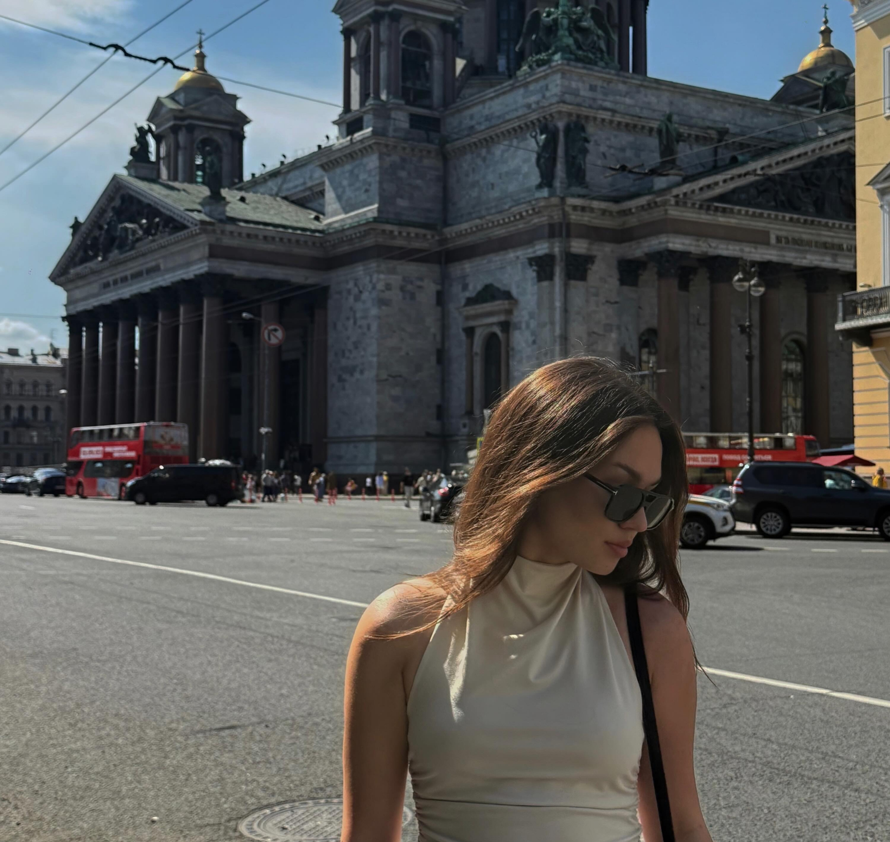
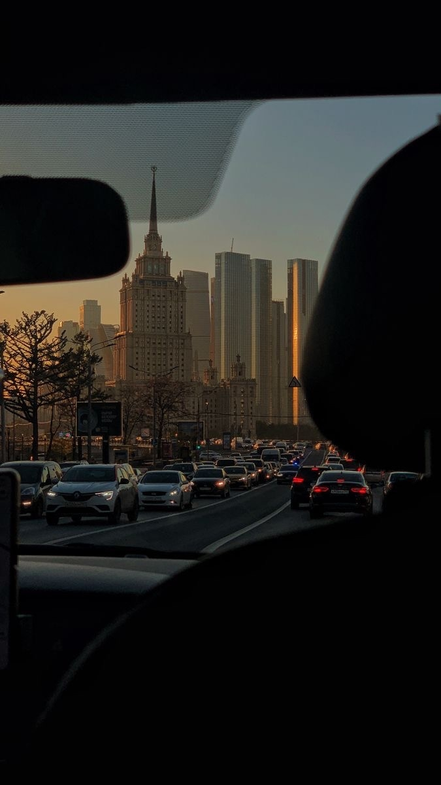

Места и впечатления

Санкт-Петербург
Больше всего мне запомнилась поездка на катер по Неве, местные бары и, конечно же, легендарные пышки. Город с невероятной атмосферой!

Москва
Город возможностей, как говорят многие. Это место, которое постоянно находится в движении и заряжает своей энергией.